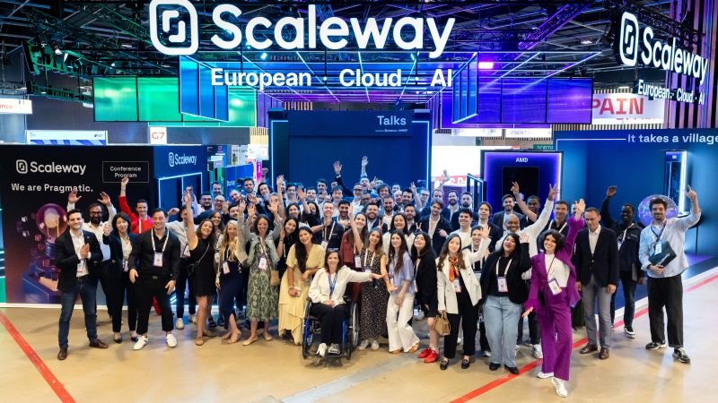
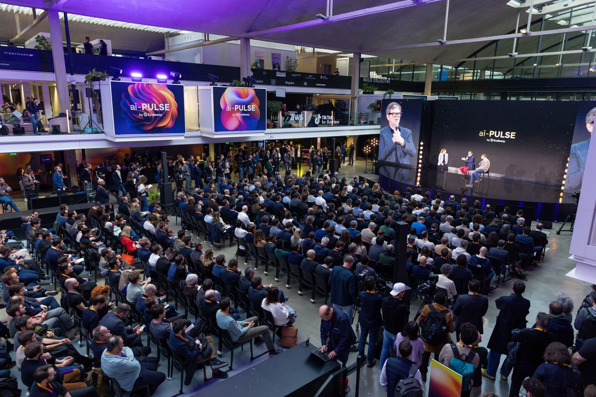

Présentation de l'entreprise Scaleway
Fondée en 1999 et filiale du groupe Iliad, Scaleway est aujourd'hui l'un des leaders européens du Cloud. L'entreprise fournit un écosystème cloud complet, allant des serveurs dédiés aux instances de cloud public, tout en s'engageant pour l'innovation, l'éco-responsabilité et la souveraineté numérique.
Le pionnier européen du cloud
Fondée en 1999 et filiale du groupe Iliad, Scaleway est aujourd'hui l'un des leaders européens dans le domaine du Cloud. L'entreprise fournit un écosystème cloud complet, allant des serveurs dédiés (Bare Metal) aux instances de cloud public, en passant par des solutions d'intelligence artificielle.
Son engagement fort pour l'innovation, l'éco-responsabilité et la souveraineté numérique en fait un acteur incontournable de la tech européenne.
En savoir plus
Personnel & équipes
Scaleway rassemble aujourd'hui plus de 500 collaborateurs passionnés. Ces équipes sont réparties dans ses différents bureaux, principalement situés à Paris, Lille, Amsterdam, et Varsovie.
Ils travaillent au quotidien pour bâtir une alternative technologique indépendante et souveraine, au service des entreprises européennes.
Notre équipe
Évolution & croissance
Poussée par une forte demande pour les infrastructures souveraines, l'entreprise affiche une croissance soutenue année après année. Scaleway a su séduire des milliers d'entreprises.
Son chiffre d'affaires dépasse largement les 130 millions d'euros annuels, confirmant sa position d'acteur incontournable au cœur de la tech européenne.
Nos infrastructures